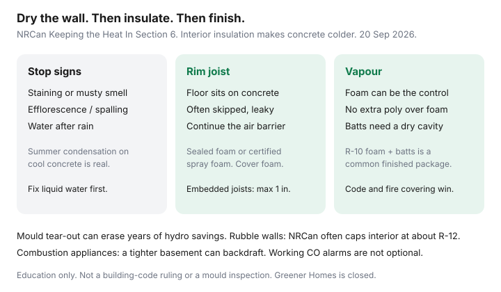

Utilities · Canada
Basement insulation in Canada without creating moisture problems
Canadians finish a basement with pink batts, a sheet of poly, and a prayer — then spend the next winter fighting a musty smell that costs more than the heat they saved. Interior insulation makes the concrete colder. Humid indoor air that sneaks behind that assembly condenses. Mould remediation is not an energy upgrade.
This is a moisture-first caution, not a U.S. “just add R-19” post. Pair it with air sealing (the rim joist is on that list) and attic R-values if you still have a naked ceiling. An EnerGuide file is optional proof, not a licence to skip a wet wall.
Disclosure: There is no natural affiliate product in a basement moisture sequence. Saving Optimizer does not claim insulation-brand, big-box, or contractor partnerships. This is education — not a building-code ruling, mould inspection, or safety sign-off.
Key takeaways
- Fix liquid water first. NRCan Keeping the Heat In Section 6 (used 20 Sep 2026): staining, efflorescence, musty smell, or summer condensation on cool concrete are stop signs — not a reason to hide the wall with batts.
- Interior insulation makes the foundation colder. Humid air that leaks behind it condenses. Air-seal the warm side; do not invent a second vapour barrier against foam.
- The rim joist / header space is high impact and often skipped. Certified spray foam or sealed rigid foam belongs there — and exposed foam needs a fire covering if the ceiling stays open.
- NRCan method notes often start at RSI 2.1 (R-12) unless local code requires more; sealed rigid foam of at least RSI 1.76 (R-10) plus batts is a common finished-basement package. Confirm Table 2-1 and your municipal inspector.
- Bill savings are comfort plus fewer kWh on a cold floor — not a mould-risk discount. Greener Homes is closed; check the live provincial list.
Why basements are a condensation minefield in cold climates
A Canadian foundation sits in cold soil. In January the concrete can sit well below the dew point of 21°C indoor air. Leave the wall bare and you feel the cold; you also let the wall dry to the room. Cover it with fluffy insulation and a poly sheet, and any air that gets behind the poly hits a surface that is now colder than it was. That is condensation, then mould, then a tear-out.
Summer is the other trap. Outdoor air is humid. The foundation is still cool. NRCan is explicit: condensation can form on foundation walls in summer when the air is very humid and the foundation is cool. A dehumidifier and a dry-first rule beat a race to close the walls before Thanksgiving.
Symptoms they list: staining or mould, blistering paint, efflorescence (white mineral dust), spalling, and a musty smell. Minor dampness can sometimes be handled from inside. Serious water belongs on the outside — grade, eavestroughs, a weeping tile conversation — before anyone buys batts.

Interior vs exterior approaches at a homeowner level
Exterior (excavate, waterproof, insulate outside the concrete) keeps the wall warm and is the cleaner building-science answer. It is also a landscaping and footing project. Most households only do it when the excavation is already paid for (weeping tile, a leak, a foundation crack).
Interior is what people actually buy. NRCan’s Section 6 packages, in household language:
| Approach | Moisture idea | Homeowner caution |
|---|---|---|
| Sealed rigid foam on concrete | Foam is the air and moisture control if edges and joints are taped and foamed | Use moisture-resistant board (XPS or Type IV EPS). Cover exposed foam for fire. |
| R-10 foam + frame + batts | Foam against concrete; stud wall in contact; no extra poly | A second vapour barrier can trap moisture. Use a smart retarder or airtight drywall. |
| Batts only + poly | Only if the basement has proven dry for a long time | NRCan: if you have any doubt, skip this. Batts against damp concrete is the classic mould sandwich. |
| Hybrid spray foam + batts | Certified closed-cell foam bonds to the wall and frames | Pro install; fire covering; rubble walls: do not exceed RSI 2.1 (R-12) without advice. |
Rubble or irregular stone walls are a different file: NRCan prefers exterior work; interior is a cap at about R-12 and a freeze-thaw conversation with the building department. A wet basement that floods is sometimes best left uninsulated on the walls, with the floor above treated as an exposed floor — that is a contractor and inspector call, not a Saturday YouTube.
Rim joists: high impact, often missed
The rim joist (joist header / foundation header) is where the wood floor sits on the concrete. It is a windy, leaky band you can often see from the basement: cobwebs moving, daylight, a cold stripe on the first-floor baseboard. NRCan calls it prone to air leakage and seldom properly insulated.
- Air-seal and insulate so the wall’s air/vapour control continues through the header. A finished wall that stops at the underside of the joists leaves a chimney.
- Sealed rigid foam cut to each bay, edges foamed, or certified spray foam, are the usual products. Mineral wool stuffed in the bay without an air seal is a filter, not a lid.
- Fully embedded joists: NRCan says do not exceed 25 mm (1 in.) of foam board — thicker foam can make the floor above uncomfortably cold and can damage the assembly.
- Concrete-block cores leak. Cap the tops and seal penetrations, not just the pretty face of the wall.
- If the basement ceiling stays open, cover combustible foam with a fire-resistant material as code requires. This is not optional décor.
If you only have one afternoon, the rim joist plus the hatch upstairs will usually beat a half-finished rec-room wall.
Vapour control and when foam vs mineral wool shows up in advice
Foam (closed-cell spray or sealed rigid) is both insulation and a vapour/air control when it is continuous. That is why NRCan tells you not to add polyethylene over a foam-plus-batt wall: you risk a double vapour barrier that cannot dry. Use a variable-perm (“smart”) retarder or an airtight-drywall approach with vapour-barrier paint, and tie the top into the joist-space air barrier.
Mineral wool or fibreglass batts are cheap R and a fire covering. They are not an air barrier. They need a dry, air-sealed cavity. Against a foundation that still weeps, they become a mould farm. In a rim-joist bay they need a sealed foam layer or they just filter outdoor air.
Polyethylene is reserved, in NRCan’s language, for basements that have proven dry. If you are arguing with yourself about whether the wall is dry, it is not dry enough for poly-over-batts.
Signs you need a moisture pro before insulating
- Water on the floor after rain, a sump that never rests, or a known crack that weeps.
- Efflorescence that keeps coming back after you brush it off.
- Mould you can see, or a smell you cannot clean with a window.
- A rubble wall, a fieldstone foundation, or a house that predates damp-proofing.
- A furnace, boiler, or water heater that uses basement air. Tightening the box can backdraft. Working CO alarms are not optional — see the stop rule in DIY air sealing.
That is a waterproofing contractor, a certified spray-foam installer, or both — not more bags from the big box. CMHC and municipal building departments exist for a reason; this page is not a permit.
Comfort and bill effects for finished vs unfinished basements
An unfinished, leaky basement is a cold-air machine for the first floor. Sealing and insulating the rim joist is often the first bill-shaped win: fewer drafts at the baseboards, a quieter furnace short-cycle. Full-height interior walls on a dry foundation add comfort for a rec room and take the edge off winter kWh. They do not “cut the bill in half,” and anyone who promises that without seeing the house is selling foam.
A finished basement that was insulated wet is a liability. Tear-out plus mould work can erase a decade of hydro “savings.” If you rent the downstairs suite, moisture is also a housing-health issue — not just a utility line.
Federal Greener Homes is closed to new applicants. Some provincial / utility stacks still list basement insulation. Confirm the live page the week you sign, and do not treat a 2023 grant table as cash. Envelope order still puts air sealing and a dry wall ahead of pretty drywall — see upgrade ROI order.
Sources & date stamps
- NRCan, Keeping the Heat In, Section 6 — basement floors, walls, crawl spaces; dampness symptoms; interior packages; joist header space (used 20 Sep 2026).
- NRCan, Keeping the Heat In, Section 6.2.4–6.2.6 — RSI 1.76 (R-10) foam + batts without extra poly; rim-joist continuity; 25 mm foam cap on fully embedded joists.
- NRCan, Keeping the Heat In, Section 6.2.8 — rubble walls, RSI 2.1 (R-12) cap, freeze-thaw caution.
- CMHC housing / indoor air quality pages — moisture and mould context; not a site-specific inspection.
- Local building code and inspector — fire covering for exposed foam; required R; permits.
Frequently asked questions
Can I insulate a damp Canadian basement from the inside?
Not until liquid water is fixed. NRCan Keeping the Heat In Section 6 treats staining, efflorescence, musty smell, and summer condensation on cool concrete as stop signs. Serious leaks belong on the exterior.
Do I need a polyethylene vapour barrier on basement walls?
Only if the basement has proven dry for a long time. Over sealed rigid foam or spray foam, extra poly can create a double vapour barrier. NRCan points to a smart retarder or airtight drywall instead.
Why does everyone mention the rim joist?
It is the leaky band where the wood floor sits on the foundation — often skipped, high impact, and it must continue the wall’s air barrier. Exposed foam needs a fire covering if the ceiling stays open.
Will basement insulation cut my heating bill in half?
Unlikely. Rim-joist sealing can quiet first-floor drafts; full-height walls add comfort. Mould tear-out can erase years of hydro savings. Anyone promising 50% without seeing the wall is selling.
Is this still a Greener Homes project?
New Grant and Loan applications are closed. Check live provincial or utility lists. An EnerGuide file is optional proof, not a licence to skip a wet wall.